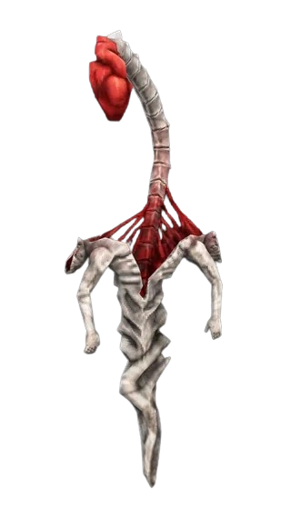

DEATHCATCHER
TYPE: Lesser Demon
DATA: Distant eyes watched the formation of Idols with fascination, and were driven to attempt the same process of molding useless life into something beautiful.
The result, however, could never have been the same, as the endless malice of their creator seeped into the Deathcatchers, whose shells were unable to withhold it, cracking them wide open.
Unable to share the love that they were never given, the Deathcatchers cannot protect anyone, and in their vain attempts to do so, they can only form lesser caricatures from the blood of those who are gone forever, puppeting their shapes to continue their past actions, pretending that they're still here, that they could have been saved.
STRATEGY
- Puppets are slower and only half as durable as the creatures they are mimicking.
- Although puppets do not grant style points, their blood can still be used to heal, making weak puppets an easy source for quick recovery.
- While each pulse will create puppets from every fallen foe nearby, the Deathcatchers require time to ready another pulse, meaning the best time to destroy a troublesome puppet is immediately after a previous pulse to maximize the time they lay dormant.
DEVELOPER NOTES
Well, this one certainly took a bit to make! This is my first time playing with Animations, so most of them will likely be here.
Making these animations wasn't easy: without any sort of knowledge on JavaScript, I was forced to make alternatives in CSS. Luckily, this language has been around for god knows how long now, and thus, there are a lot of YouTube tutorials online going over the basics of animations and how to import them.
For context, this site was made for the new Deathcatcher enemy in ULTRAKILL. Its recent release of the game's second-to-last set of levels, named 'FRAUD', piqued my interest after playing it, and I decided to replicate the Enemy Log for the foe I found most interesting!